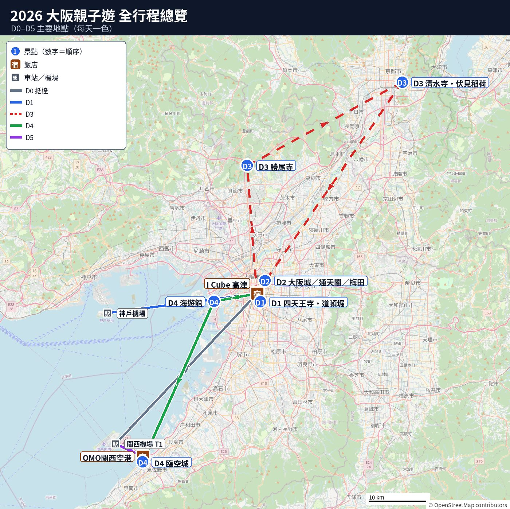

🗾 大阪行程
🗺️ 全行程總覽圖
圖例：藍圓＝景點（數字為順序）｜橘方＝美食｜連線只表示大概方向

地圖資料 © OpenStreetMap contributors
🧓
- 每天排 2–3 個重點。
- 每段交通加 15–20 分緩衝。
- 景點旁列 1–2 間咖啡店供👴 爸爸休息。
- 標估計之時間與車資，出發前查即時連結。
每日行程（點進子頁面）
📅D0 11/04（三）提早抵達：關西機場→飯店放行李✈️D1 11/05（四）｜抵達神戶機場 → 大阪（兩個版本）🏯D2 11/06（五）｜大阪三選一（大阪城／新世界・HARUKAS／梅田）🚐D3 11/07（六）｜包車：勝尾寺 → 清水寺 → 伏見稻荷🐋D4 11/08（日）｜海遊館 → 臨空城 Outlet → OMO 關西機場🛫D5 11/09（一）｜臨空城 → 關西機場 → 回台北
| 天 | 日期 | 重點 | 周遊卡 |
|---|---|---|---|
| D0 | 11/04（三） | 先行者 1 人先到關西機場 → 利木津巴士到飯店放行李，下午自由（家人 D1 才到） | 不用周遊卡，刷西瓜卡 |
| D1 | 11/05（四） | 抵達神戶機場 → 大阪（兩個版本） | 2 日券第 1 天（建議 D1＋D2）。A 版每人約 ¥3,170；B 版只坐傍晚觀光船約 ¥2,000 |
| D2 | 11/06（五） | 大阪三選一：A 大阪城＋北濱／B 新世界＋HARUKAS／C 梅田 | 2 日券第 2 天。A、C 每人約 ¥3,430–3,480；B 約 ¥2,100–2,900 |
| D3 | 11/07（六） | 🚐 包車：勝尾寺 → 清水寺 → 伏見稻荷 | 不用周遊卡（包車；箕面、京都也不在範圍）。勝尾寺週六停車要預約 |
| D4 | 11/08（日） | 海遊館 → 臨空城 Outlet → OMO 關西機場 | 不用周遊卡（海遊館不含），刷西瓜卡 |
| D5 | 11/09（一） | 臨空城 → 關西機場 → 回台北 | — |
⚠️ 注意事項（出發前看一次）
- 💴 退稅新制（2026-11-01 起）：
- 店裡先付含稅價。
- 同店同日滿 ¥5,000 未稅才可辦。
- 日本拆開用過可能整張不退。
- 離境時在機場免稅機刷護照退錢。
- 需在託運行李前辦理。
- 每人用自己的護照買。細節見 D5。
- 🚃 交通票卡：
- 每人一張 西瓜卡（Suica）（實體卡或手機 Suica 都可以），關西的電車、地鐵、巴士都能刷。加值只能在車站售票機用現金，巴士上不能加值。
- 地鐵、巴士、超商、置物櫃皆可刷。
- 周遊卡沒包的路線刷 IC 卡。
- 💴 現金準備：
- 寺廟門票、御守、小店、置物櫃常只收現。
- 全家建議備約 ¥30,000–40,000（估計）。
- 現金不足在 7-Eleven 的 Seven Bank ATM 領。
- 🚻 廁所提醒：
- 車站、百貨、超商都有廁所。
- 勝尾寺、伏見稻荷山上廁所少。
- 上車前和進景點前先上廁所。
- ⏰ 11/9 退房：
- OMO 關西機場退房後搭南海 1 站或免費接駁。
- 建議搭乘 9:00 接駁班次到 T1。
- 目標 10:00 前到機場。
- 機場先退稅再報到。
- 星宇櫃台 11:20 關櫃（見 D5）。
- 📱 入境與網路：
- Visit Japan Web 每人一份 QR code。
- 先行者 11/4 入境自備；家人 4 人 11/5 神戶入境。
- 每人手機都要有上網 eSIM 或分享器。
- 👴 爸爸手機要有網路與 LINE 供走散聯絡。
- 🧳 行李與人潮：
- 行動電源只能放隨身行李，不可託運。
- 飛機使用規定以星宇當天公告為準。
- 11/7（六）京都、11/8（日）海遊館人最多。
- 排隊時先讓👴 爸爸找地方坐。
其他
🛂入境注意事項（Visit Japan Web、關西／神戶機場入境、退稅）3 件事先做好： - 出發前 1–3 天填好 VJW。 - 先行者自己開一個帳號（11/4 JX820 關西）。 -…🛒2026 唐吉訶德必買32 項，分 6 類（新增「☀️ 防曬」8 項、「🧴 控油 & 粉刺」8 項）。依據唐吉訶德 2026 年上半年銷量…
✈️ 機票
| 日期 | 航班 | 時間 | |
|---|---|---|---|
| 去程（先行者 1 人） | 11/04（三） | 星宇 JX820 | 桃園 T1 07:40 → 關西機場（KIX）第1航廈 11:10 |
| 去程（家人 4 人） | 11/05（四） | 星宇 JX834 | 桃園 T1 07:00 → 神戶機場（UKB）第2航廈 10:30 |
| 回程 | 11/09（一） | 星宇 JX821 | 關西機場 T1 12:20 → 桃園 T1 14:40 |
- 神戶機場第2航廈（國際線）和第1航廈分開。
- 走到 Port Liner 車站約 5–10 分。
- 航廈間有免費接駁巴士（神戶機場官網）。
- ⏰ 回程目標 10:00 前到關西機場。
- 機場託運行李前先至免稅機辦退稅。
- 退稅後至星宇櫃台報到。
🌤️ 天氣預報
🧥
- 日本氣象廳 11/03 11:00（日本時間）發布。
- 台北時間 11/03 10:00 發布，10:13 抓取。
- 預報每天會變，出門前一天看即時連結。
| 日期 | 行程 | 地點 | 天氣 | 高／低 °C | 降雨機率 | 穿著建議 |
|---|---|---|---|---|---|---|
| 11/04（三） | D0 先行者 1 人到 | 大阪 | 晴，傍晚轉陰，深夜局部雨 | 23／12 | 白天 0–10%，晚上 40% | 短袖＋薄外套；晚上帶折傘 |
| 11/05（四） | D1 家人到神戶 | 大阪（神戶相近） | 陰，有時雨 | 22／16 | 60% | 帶傘；薄長袖＋防風外套；爸爸穿防水好走的鞋 |
| 11/06（五） | D2 大阪 | 大阪 | 晴，有時陰 | 23／15 | 20% | 長袖＋薄外套；早晚會涼 |
| 11/07（六） | D3 包車 | 京都 | 陰，有時晴 | 18／11 | 30% | 降溫日：長袖＋保暖外套；爸爸加背心或圍巾。勝尾寺在山上，會比市區更冷（估計低 2–3 度） |
| 11/08（日） | D4 海遊館／臨空城 | 大阪 | 晴，有時陰 | 18／11 | 20% | 長袖＋外套；海邊風大，爸爸帶圍巾 |
| 11/09（一） | D5 回程 | 大阪 | 陰，有時晴 | 18／11 | 30% | 長袖＋外套；早上出門最冷 |
- 🌧️ 11/05 最可能下雨（60%），出門帶傘。
- ❄️ 11/07 起降溫，早晚約 11 度比台灣冷。
- 👴 爸爸保暖：外套、背心、圍巾皆備。
- 室內暖氣熱，穿可穿脫洋蔥式。
- 11/06 以後可信度：氣象廳標 A（高）。
即時預報：
- tenki.jp 大阪市 2 週天氣：tenki.jp/forecast/6/30/6200/27100/10days.html
- tenki.jp 京都市 2 週天氣：tenki.jp/forecast/6/29/6110/26100/10days.html
- 氣象廳 大阪府：jma.go.jp 大阪
- 氣象廳 京都府：jma.go.jp 京都
大阪周遊卡（2日券）怎麼用最划算
- 💴 票價與時間：
- 2 日券 ¥5,000，1 日券 ¥3,500。
- 必連續 2 個日曆天使用。
- 每天計算時間為 3:00–翌日 2:59。
- 來源：osaka-amazing-pass.com/cht/。
- 🚃 涵蓋範圍：
- 免費搭大阪市內 Metro、市巴士。
- 免費搭市區範圍內私鐵。
- 約 40 個以上設施免費入場。
- 不含神戶、京都。
- 不含北急（江坂以北）、臨空城／關西機場。
- 不含海遊館、勝尾寺。
- 📅 行程建議：
- 11/03 改 D2 大阪三選一、D3 包車。
- 建議用於 D1（11/05 週四）＋D2（11/06 週五）。
- 💰 省錢試算：
- D1 選 A＋週五 A/C：價值約 ¥6,600–6,650。
- 價值高於 ¥5,000，每人省約 ¥1,600。
- 5 人共省約 ¥8,000。
- D1 選 B：不含神戶，加週五 A/C 每人約 ¥5,430–5,480。
- D1 選 B 每人僅省約 ¥450，5 人省約 ¥2,300。
- D1 晚上必搭觀光船（21:00 末班）。
- 🎡 設施與票券細節：
- 週五選 A 可搭大阪城御座船（原價 ¥1,800）。
- Dive & Walk（¥3,000）限 65 歲以下。
- 「兩天1000」應為台幣代購價估計，看日幣回本。
- 為電子 QR 票，截圖無效，用官方 App／網頁。
💰 周遊卡省多少（11/02 改行程後）
🎫
- 11/03 改行程：D2 大阪、D3 包車。
- 2 日券（¥5,000）需連用 2 日曆天。
- 非 48 小時制，週六包車用不到。
- 建議用於 D1（四）＋D2（五）。每人比較如下：
| 用法 | 周遊卡價值/人 | 結果 |
|---|---|---|
| D1＋D2（四＋五），D1 A 版 | D1 A ¥3,170＋週五 A／C 約 ¥3,430–3,480＝約 ¥6,600–6,650 | 每人省約 ¥1,600–1,650（5 人約 ¥8,000–8,250） |
| D1＋D2（四＋五），D1 B 版 | D1 B ¥2,000＋週五 A／C 約 ¥3,430–3,480＝約 ¥5,430–5,480 | 每人省約 ¥430–480（5 人約 ¥2,150–2,400） |
| D1＋D2，週五選 B 方案 | D1 A：¥5,270–6,070；D1 B：¥4,100–4,900 | D1 A 省 ¥270–1,070；D1 B 虧 ¥100–900 |
| D2＋D3（五＋六） | 週五 A／C 約 ¥3,430–3,480＋週六包車 ¥0 | 虧約 ¥1,520–1,570 |
| D3＋D4（六＋日） | 週六 ¥0＋D4 地鐵 ¥290＋天保山大觀覽車 ¥1,000＋サンタマリア ¥1,800＝約 ¥3,090 | 虧約 ¥1,910 |
| 1 日券只用週五（¥3,500） | 週五 A／C 約 ¥3,430–3,480；B ¥2,100–2,900 | A／C 約打平（−¥20～−¥70）；B 虧 |
- 🎫 購買建議：
- 未購票：D1 選 A 買 2 日券用 D1＋D2。
- D1 選 B 且週五選 B，刷西瓜卡較省。
- 1 日券只用週五打平，不需特地買。
- 已購 2 日券（「兩天1000」）就用 D1＋D2。
- 2 日券無法拆開非連續日使用（官網）。
- ❌ 不適用與優惠：
- 關西機場版（28 小時 ¥5,300）本次用不到。
- 天保山大摩天輪、サンタマリア遊船免費（官網）。
- 大阪城御座船免費；海遊館不含。
- 無兒童票，皆為大人價。
計程車小提醒（5 人）
- 👥 人數與車種：
- 一般計程車限載 4 人。
- 5 人需叫 2 台（4+1）。
- 可用 GO 叫 1 台大型ワゴン（最多 5 人）。
- 🗺️ 大車服務範圍：
- 大阪市中心（中央/北/浪速/天王寺/西/福島等）。
- 豐中市可叫。
- 神戶市（中央/兵庫/長田/灘/東灘區）。
- 京都市中心（東山/下京/中京/上京/左京/右京/北/南）。
- 箕面（勝尾寺）、臨空城／關空、京都伏見不可叫。
- GO PREMIUM 僅東京、名古屋，關西無（官網）。
- 💴 費用與規則：
- 車資＝跳錶＋大車費＋迎車費。
- 大車費最高跳錶 50%，最低 ¥500。
- 行經高速公路另計過路費。
- 車資依時段路況浮動，以 App 為準。
- 不用給小費。
- 🚗 搭車注意事項：
- 車門自動開關，請勿手動操作。
- 給司機看地圖或日文地址最快。
- 後座強制繫安全帶。
- 🔗 來源：GO 大型ワゴン說明｜GO PREMIUM
🚐 GO 叫大車教學（大型ワゴン）
- 📱 出發前準備：
- 台灣先下載 GO App（iOS／Android）。
- 註冊手機並於 GO Pay 綁定信用卡。
- 大型ワゴン必用 GO Pay，不可車上付款。
- 🚕 叫車步驟：
- 輸入上車點與目的地。
- 按「次へすすむ」。
- 車種選「大型ワゴン」。
- 確認「料金詳細」大車費後叫車。
- ⏰ 叫車時間：
- 僅限「今すぐ呼ぶ」（現叫），不可預約。
- 出發前 10–15 分再叫車（估計）。
- 🚗 辨識車輛：
- 車型多為 Toyota NOAH／VOXY／ESQUIRE。
- 車頂常無的士燈或公司標誌。
- 上車前必核對 App 車牌號碼。
- 🧳 載量與備案：
- 最多乘載 5 人。
- 大行李約放 4 個（估計）。
- 行李過多加叫 1 台一般計程車。
- 沒車或非範圍改叫 2 台（4+1）或搭大眾運輸。
🚐🚕🚆 5 人交通比較總表（車資都是估計）
ℹ️
- 11/03 改包車至 D3（11/07 六）。
- 祇園四條／伏見稻荷至清水寺為包車備案。
- 箕面萱野／勝尾寺各段亦為包車取消備案。
- 惠美須町至日本橋現為 D2（五）B 方案用。
| 路段 | 🚐 GO 大型ワゴン ×1 | 🚕 一般計程車 ×2（4+1） | 🚆 大眾運輸 |
|---|---|---|---|
| 神戸空港駅 → 三宮 | 約 ¥4,500–6,000（估計，含大車費）；神戶機場在中央區，但 App 內確認是否可叫 | 約 ¥6,000–8,000（估計，2 台） | ¥340×5＝¥1,700 |
| 近鐵日本橋 → 市區飯店 | 約 ¥1,200–1,500＋迎車費（估計）；最多約 4 個大行李 | 約 ¥1,400–2,000（估計） | ¥0 |
| 心齋橋 → 日本橋（回飯店） | 約 ¥1,500–2,250＋迎車費（估計） | 約 ¥2,000–3,000（估計） | ¥240×5＝¥1,200（周遊卡當天 ¥0） |
| 惠美須町 → 日本橋（回飯店） | 約 ¥1,500–1,950＋迎車費（估計） | 約 ¥2,000–2,600（估計） | ¥190×5＝¥950（周遊卡當天 ¥0） |
| 日本橋 → 大阪港（海遊館） | 約 ¥4,500–6,000＋迎車費（估計）；最多約 4 個大行李 | 約 ¥6,000–8,000（估計） | 約 ¥290×5＝¥1,450（估計） |
| 祇園四條 → 清水寺 | 約 ¥1,500–2,250＋迎車費（估計） | 約 ¥2,000–3,000（估計） | ¥230×5＝¥1,150 |
| 伏見稻荷 → 清水寺 | 京阪約 ¥1,150＋大車約 ¥1,500–2,000（估計）＝約 ¥2,650–3,150；伏見區不能叫大車，要到清水五條再叫 | 約 ¥4,000–5,000（估計，2 台） | 約 ¥230×5＝¥1,150（估計） |
| Outlet → OMO 關西機場 | ❌ 這區不能叫大車（泉佐野市） | 約 ¥1,400–2,000（估計） | ¥0 |
| OMO 關西機場 → りんくうタウン站 | ❌ 這區不能叫大車（泉佐野市） | 約 ¥6,000–8,000（估計，2 台） | 南海 ¥370×5＝¥1,850 |
| 三宮 → メリケンパーク（神戶港） | 約 ¥1,300–1,800＋迎車費（估計） | 約 ¥1,600–2,400（估計） | ¥0 |
| 箕面萱野 → 勝尾寺 | ❌ 這區不能叫大車（箕面市） | 約 ¥6,000–7,000（估計，2 台；站前排班或 GO 叫） | ¥800×5＝¥4,000（只收 IC 卡／信用卡專用票） |
| 勝尾寺 → 谷町四丁目（大阪城） | ❌ 這區不能叫大車（箕面市） | 到箕面萱野約 ¥6,000–7,000＋迎車費（估計，2 台，要用 GO 叫） | 巴士 ¥4,000＋北急 ¥240×5＝¥1,200 |
臨空城 Outlet 必買與退稅
📄 完整清單已移到 D4 底下：📄 🛍️ 臨空城限定必買與退稅
- ℹ️ 基本資訊：
- 共有約 250 店。
- 營業時間 10:00–20:00（2 月至 19:00）。
- 2027-02-25 休館。
- 分 Main Side 與 Sea Side 兩區。
- Info Center 在 Main 1F。
- 置物櫃 ¥300–1,000。
- 大行李寄放 ¥1,000/天（收現）。
- 美食街有 Seven Bank ATM。
- 來源：premiumoutlets.co.jp/cht/rinku/
- 🎫 外國遊客優惠：
- 憑護照至 Info 掃碼領電子券。
- 部分店家最多 9 折（多為 95 折）。
- KKday 亦有優惠券。
- 來源：premiumoutlets.co.jp/cht/rinku/
- 🏬 2026 新店（07-15 官方）：
- CHUMS、AVIREX、WIND AND SEA。
- Arc'teryx 重開、Royal Copenhagen/iittala。
- LEGO、ABC-MART、Eggs 'n Things。
- Marimekko（期間限定）等。
- 來源：premiumoutlets.co.jp/rinku/
- 🛍️ 常見必買（折扣浮動）：
- Coach 標價 5 折結帳再 7–75 折。
- Michael Kors 5 折再 7 折。
- Le Creuset 約 5–55 折。
- Onitsuka Tiger、ASICS、New Balance、Skechers。
- Nike 鞋款 ¥2,999 起、GAP 6–7 折。
- BEAMS 7–8 折、Sanrio 8 折。
- Nike、adidas 據傳不辦退稅，現場確認。
- 來源：bobbytravel.tw
- 💴 退稅新制（2026-11-01 起）：
- 店內付含稅價，離境退稅。
- 同店同日滿 ¥5,000（未稅）可辦。
- 關西機場託運前持收據商品刷免稅機。
- 日本境內吃掉之消耗品不退。
- 需於 90 天內出境。
- 來源：mlit.go.jp/kankocho/tax-free/
- 🏷️ 特賣日程：
- 新年特賣 2027/1/1–3。
- Bargain 特賣 2027/1/15–24。
- 11 月無大型特賣。
- 來源：premiumoutlets.co.jp/cht/rinku/
路線顏色與運行狀況
- 御堂筋線 紅｜谷町線 紫｜千日前線 粉紅｜中央線 綠｜堺筋線 咖啡色｜四橋線 藍｜長堀鶴見綠地線 淺綠
- Osaka Metro 運行情報
- 南海 運行情報
- JR西日本 近畿運行情報
- 阪神電車
- 京阪 運行情報
- 京都市交通局
- 阪急バス
地點清單
各天的地圖連結已移到每天頁面最下方的「📍 今日地點」。
備註
- 11/03 改行程：D2（11/06 週五）改大阪三選一，D3（11/07 週六）改包車（勝尾寺＋京都）。11/02 版（週五包車、週六大阪）和更早的舊 D2、京都早起版／一般版，都存在「舊行程備份」頁。
📚 延伸閱讀
- ⛩️ 📄 日本神社參拜流程與注意事項：去神社前先看（鳥居、手水、二拜二拍手一拜）。
- 各景點的歷史、小吃、參觀方式：在每一天行程頁裡的景點子頁。
- 🦀 📄 帝王蟹吃到飽評估：大阪帝王蟹吃到飽比較（價格、時間、是不是真帝王蟹），建議 D2 晚上。